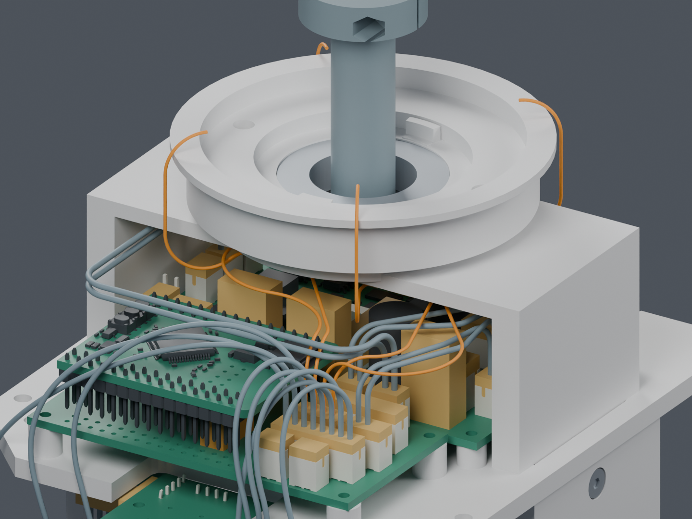
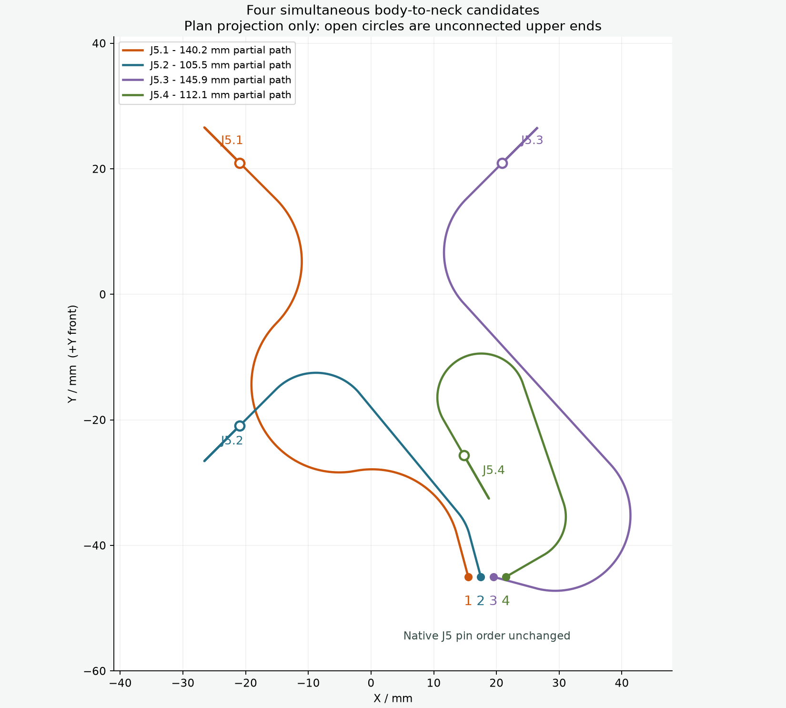
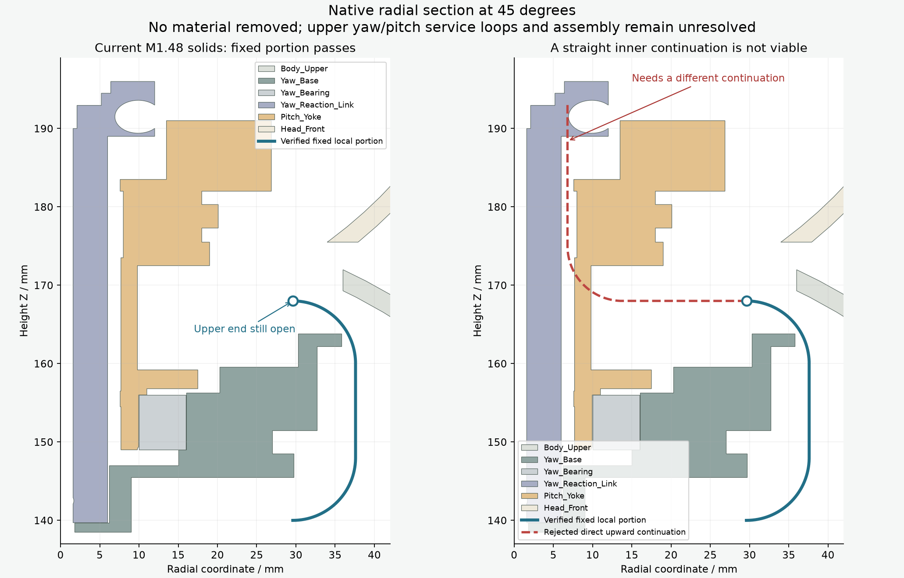

身体端已接到颈部，头内活动段还未接完
四根下部路线同时通过名义几何检查。 完整线束与带线装配仍未完成，候选未应用主模型。本页没有增加孔、切槽或零件。

橙色：本次四根身体至颈部候选；灰蓝：14 根已有候选线。线径按模型原尺寸显示。头部和外壳在本视图中隐藏。
这次完成了什么
四根线保持 Motion J5 原针序，连接到颈部 Z168 mm。直接用当前主模型的 209 件实体，加上 29 个对插包络、14 根已有候选线重新检查，没有借用未采用的结构通道。
四线相互间隙的保守下界最小为 0.319 mm，满足本次 0.3 mm 名义要求；最小弯曲半径 7 mm，130 个头部姿态未检出间隙失败。对插与压接细节仍含估计，几何结果不等于实物合格。

空心圆是未连接的上端。图示颜色只区分路径。
| 身体端针脚 | 颈部方位 | 已绘制下部路径长度 |
|---|
| J5.1 | 135° | 140.20 mm |
| J5.2 | 225° | 105.48 mm |
| J5.3 | 45° | 145.86 mm |
| J5.4 | 300° | 112.06 mm |
表中不是裁线尺寸。 上方活动段、端子、剥线长度及制作余量尚未纳入。
下一处问题已定位
直接向头内竖直延长会碰到头座/反力连接区域。另试的 576 条外侧 S 弯中，有 34 条在零位能放下，但转头、低头后仍被头座或壳体挡住。这些上行部分需要按相对运动重新设计，不能沿用整段固定的路线。

原打印件剖面与具体失败路线。没有据此认定必须切槽，也没有修改结构。
尚缺：上方偏航/俯仰活动线环、CAM 插头连接、其余跨关节线与 FFC、全长材料与固定，以及完整带线装配顺序。当前没有供应商制作图放行。
下载独立 Blender完整说明原模型俯视图
原始检查记录与执行证据
四线同时排布当前实体与姿态对插包络复查直接延长外侧绕行命令与哈希交付检查